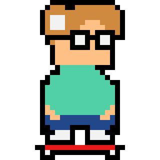

Tyler Amalfa

Hi, my name is Tyler Amalfa!
I am an aspiring electrical engineer and computer scientist, currently enrolled in my sophomore year at Rutgers University. I have been studying engineering since high school, where I was in an engineering centered program. I've worked on a large number of projects practicing the various skills I've developed since then. This website contains information about the classes I've taken, projects I've worked on, and various skills and interests I have.